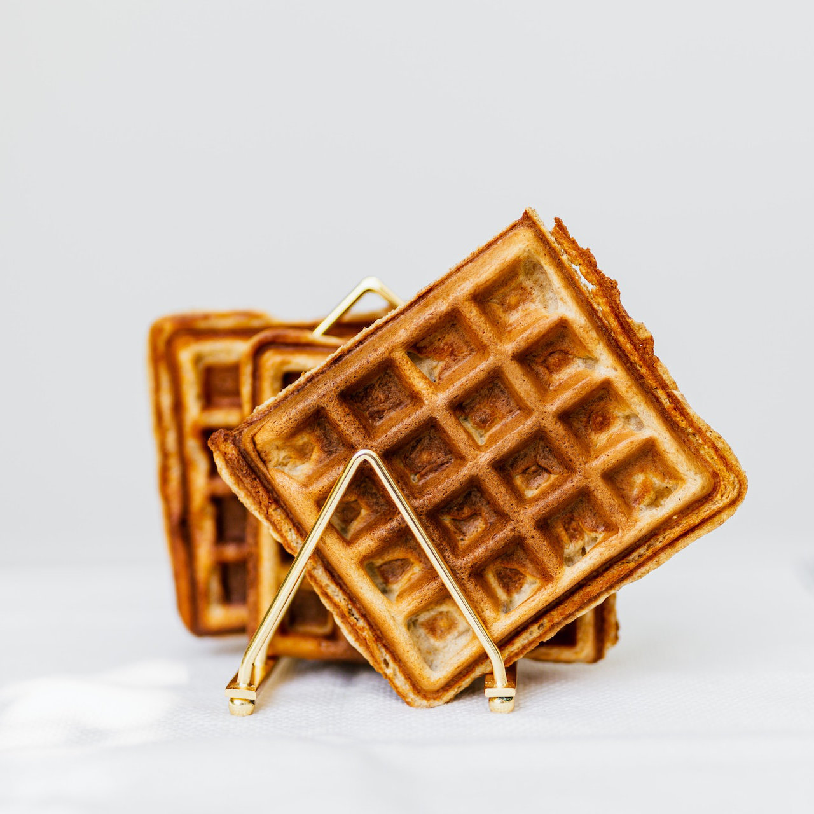

Delicious Waffles

Description
This easy batter recipe is a great way to treat yourself with some delicious waffles in the morning (or any other time of the day!)
Ingredients
- 3 cups all-purpose flour
- 4 tsp baking powder
- 1 tsp salt
- 2 tbsp white sugar
- 2/3 cup salted butter
- 4 egg whites
- 4 egg yolks
- 2 cups milk
Steps
- Melt butter and let it rest at room temperature while you prepare the rest of the ingredients.
- Mix all dry ingredients (flour, baking powder, salt and sugar) in a bowl.
- In a large bowl, whisk milk and egg yolks together.
- Add half of the dry ingredients in the large bowl and whisk batter until uniform.
- While continuously whisking, slowly add the melted butter to the batter.
- Add the remaining dry ingredients to the batter and whisk until uniform.
- Whisk egg whites until fluffy and fold them gently into the batter.
- Bake for about 5 minutes with your favorite waffle maker.
- Enjoy (with a ton of whipped cream)!
Back to Home Page